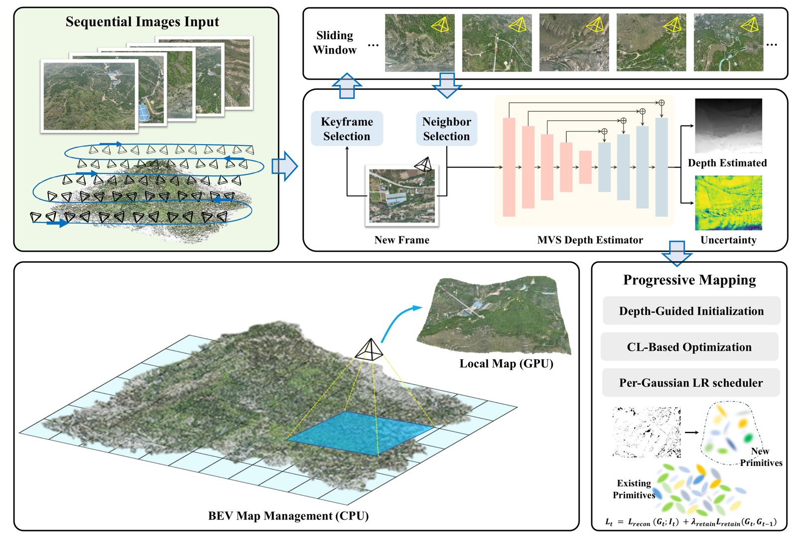
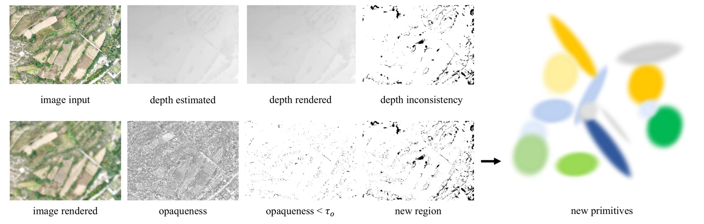
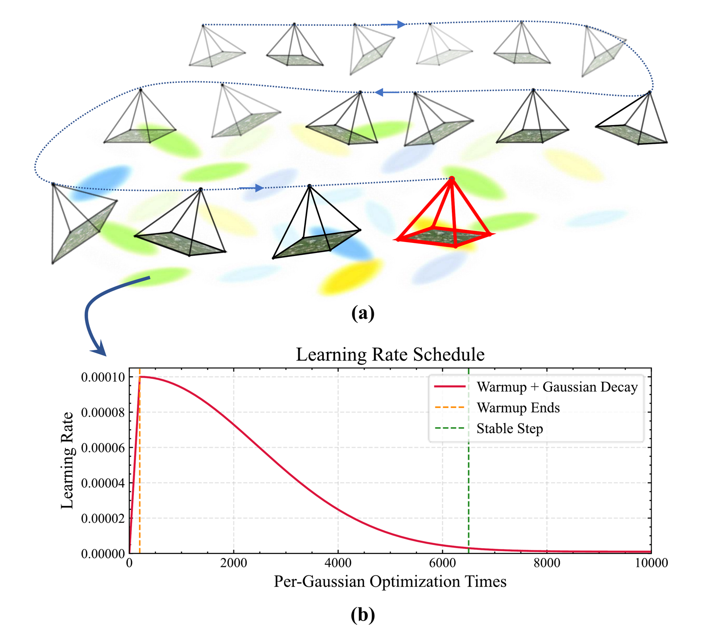
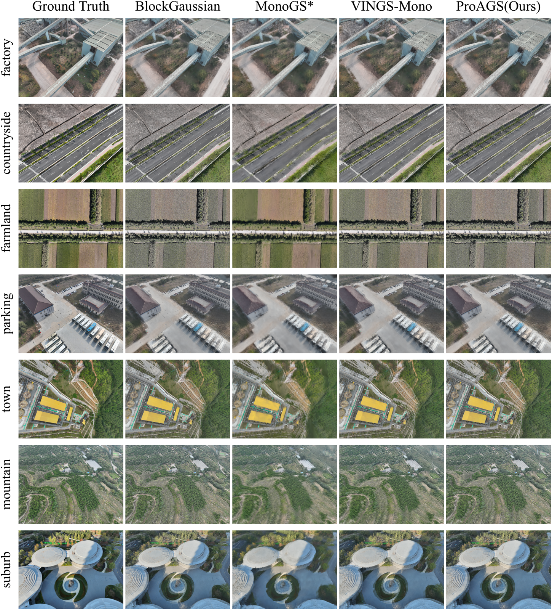
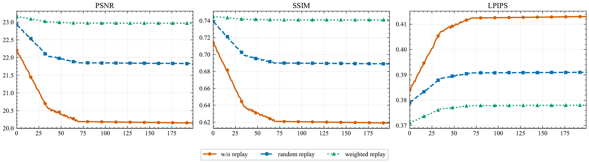
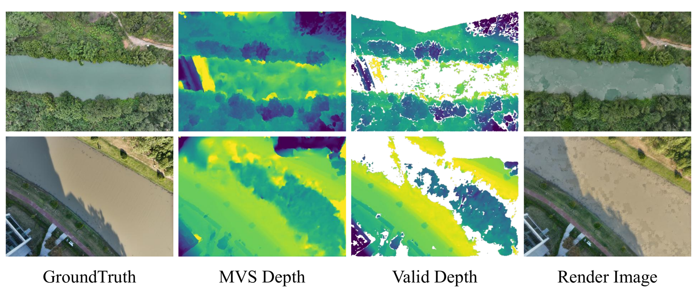

Select and estimate
Select keyframes that reveal new regions. Retrieve co-visible neighbors with a useful baseline and estimate dense depth using DiffMVS.
IEEE Geoscience and Remote Sensing Magazine2026
Department of Aerospace Intelligent Science and Technology, School of Astronautics, Beihang University
State Key Laboratory of Virtual Reality Technology and Systems, Beihang University
Corresponding author: Zhengxia Zou
Unmanned Aerial Vehicles (UAVs) have become essential platforms for large-scale remote sensing, enabling rapid and high-resolution data acquisition. Achieving efficient, high-fidelity 3D large-scale scene reconstruction and novel view synthesis from streaming UAV imagery is of critical importance for many applications. Recent advances in 3D Gaussian Splatting (3DGS) provide an efficient and high-fidelity representation for novel view synthesis, but existing 3DGS pipelines are not tailored to the sequential, nadir-looking characteristics of UAV imagery and struggle to scale to kilometer-scale scenes. In this paper, we present a progressive aerial-oriented Gaussian splatting reconstruction framework (ProAGS). To address the depth ambiguity caused by large imaging distances and limited inter-frame disparity, we introduce a multi-view dense depth estimation module that provides scale-consistent and reliable depth priors for Gaussian initialization and geometric supervision. We further reinterpret progressive mapping as a continual learning problem and propose a loss-aware replay strategy together with a per-Gaussian learning-rate scheduler, which jointly mitigate catastrophic forgetting in previously mapped regions and overfitting in newly initialized primitives. To achieve scalability, we design a bird’s-eye-view (BEV) grid structure and a dynamic CPU–GPU map loading mechanism that decouple GPU memory usage from scene extent and support progressive mapping over large-scale UAV scenes. Experiments on challenging aerial datasets demonstrate that the proposed method produces more stable geometry, fewer artifacts, and competitive rendering quality compared with existing incremental 3DGS baselines, while maintaining practical runtime and memory footprints for UAV remote sensing applications.
ProAGS builds a persistent Gaussian map from sequential UAV images through two asynchronous threads for image processing and progressive mapping. Depth-guided initialization adds reliable geometry from multi-view depth; loss-aware replay and per-Gaussian learning rates preserve earlier views while adapting to new observations; and BEV map management keeps the global map in CPU memory while loading active regions onto the GPU.

Select keyframes that reveal new regions. Retrieve co-visible neighbors with a useful baseline and estimate dense depth using DiffMVS.
Initialize reliable new geometry, replay past views according to their reconstruction loss, and schedule each Gaussian’s learning rate independently.
Keep the global BEV map in CPU memory. Transfer the local cells needed for current and recent views to the GPU.
New regions are identified by low rendered opaqueness or disagreement between rendered and estimated depth. Confidence filtering rejects unreliable MVS depth before back-projection. Observation frames refine the existing map without initializing new geometry.

Loss-aware replay revisits past views according to their reconstruction loss, helping preserve previously mapped regions.
Each Gaussian follows its own learning-rate warmup and decay, balancing adaptation of new geometry with stability of the existing map.

An optional global refinement stage optimizes the completed map for 10,000 additional iterations. Results with this stage are denoted ProAGS*.
We evaluate image quality across seven UAV scenes with PSNR, SSIM, and LPIPS, alongside reconstructed-view comparisons. We also examine processing time, memory use, and retention of previously observed views.
ProAGS improves LPIPS over VINGS-Mono on all seven scenes. PSNR and SSIM gains are not uniform: Countryside and Mountain have lower PSNR, and Mountain has lower SSIM. Optional global refinement improves all three metrics over ProAGS in every scene.
Ground-truth photographs and reconstructed views across Factory, Countryside, Farmland, Parking, Town, Mountain, and Suburb.

Only the active region is loaded onto the GPU. The full Gaussian map grows in CPU memory as the UAV observes more of the scene.
Measured on one NVIDIA RTX 3090 (24 GB), Intel i9-14900KF, and 128 GB RAM.
Average processing time ranges from 0.787 to 0.855 seconds per input frame. With photograph intervals of approximately 0.7–1 second, this supports near-online progressive mapping. These are processing times, not rendering frame rates, and assume camera poses are already available.
On Suburb, each keyframe is tracked for the next 200 frames after it first enters optimization. Metrics are averaged over the tracked keyframes. Weighted replay better preserves previously observed views throughout this window.

Where reliable geometry remains difficult
ProAGS targets progressive mapping from accurately posed aerial photographs. Pose estimation is outside this pipeline, and the reported throughput does not establish strict real-time operation.
Water surfaces make multi-view matching unreliable. Confidence filtering can then leave too few valid depth samples to initialize Gaussians, producing holes, blur, or floating artifacts.
Extreme terrain relief or large vertical structures can challenge the horizontal BEV partition and local visibility estimate. The global map still consumes increasing CPU memory as the scene expands.

@article{wu2026progressive,
title={Progressive Gaussian Splatting for High-Fidelity 3D Reconstruction of Large-Scale Remote Sensing Scenes: Practical, scalable, and compatible with standard aerial imaging workflows},
author={Wu, Yongchang and Shi, Zhenwei and Zou, Zhengxia},
journal={IEEE Geoscience and Remote Sensing Magazine},
volume={14},
number={4},
pages={240--258},
year={2026},
publisher={IEEE}
}